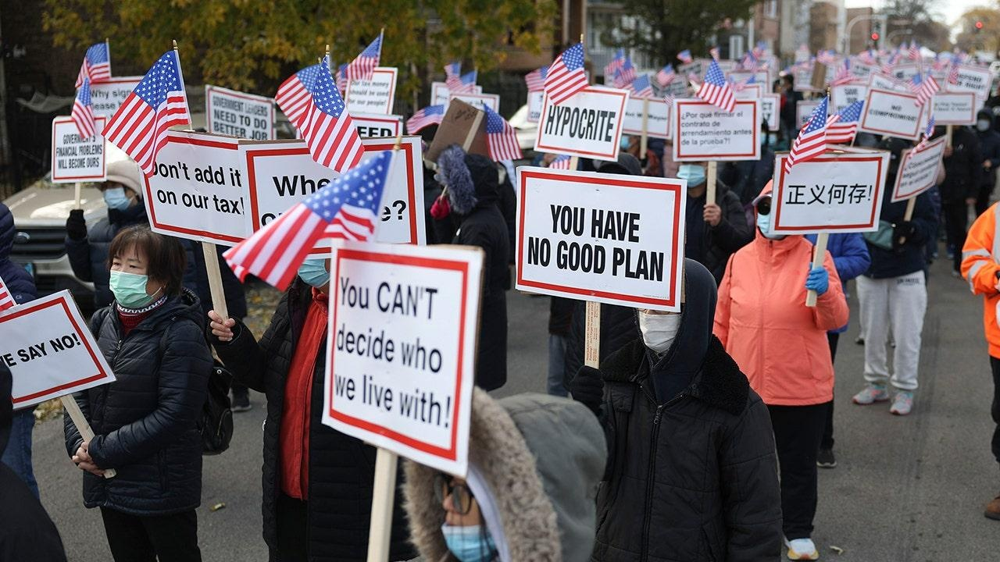

Chicago Tribune editorial hammers local leaders for hazardous contamination at migrant campAfter a local investigation found dangerous amounts of hazardous chemicals in a city location that could potentially host migrants, the editorial board of the Chicago Tribune implored Gov. J.B. Pritzker to house them elsewhere. Brighton Park, once the sight of a zinc smelter, has been slated to house migrants in a facility that could endure Chicago's harsh winter conditions. However, an investigation concluded that the high levels of contaminants that remain could be a hazard in itself. "Mayor Brandon Johnson’s administration finally released the environmental report on the suitability of the Brighton Park site on which it’s constructing a winterized tent city to house up to 2,000 migrants for the cold-weather months," The Chicago Tribune reported, noting that researchers "found toxic substances that are damaging to human health." The news outlet said that some forms of remediation by the local city would be "removing soil in a portion of the property in which mercury levels were so high that they were unsafe for human inhalation outdoors" noting that "mercury exposure in pregnant women can cause birth defects and cognitive harm to fetuses in the womb." The board also wrote that "the entire site is riddled with other toxins" that the city is attempting to address by "laying stone aggregate (otherwise known as little rocks) on top of the soil throughout the property to keep the contaminated soil away from, say, kids who are playing and roughhousing or pretty much any other activity in which people might come in contact with the ground." One grim aspect the board referred to as a "last dagger" is that "The firm and its subcontractor, hired to do this work, want to make it abundantly clear that they don’t vouch for the safety of this arrangement." "Certain indicators of the presence of hazardous substances, petroleum products, or other constituents may have been latent, inaccessible, unobservable, non-detectable, or not present during these services," the report surveying the facility states, according to the Tribune. "We cannot represent that the site contains no hazardous substances, toxic materials, petroleum products, or other latent conditions beyond those identified during this evaluation." While disclaimers are a common part of life, the Chicago Tribune warned that "this blunt language still should be add to the worry for Chicago taxpayers who will be on the hook for any lawsuits." The news outlet concluded that this entire situation is "yet another example of the poor decision-making emanating from Mayor Johnson’s administration." "We’ve highlighted how the administration’s haphazard response to the migrant crisis has compelled Gov. J.B. Pritzker to step in. The state now is handling functions a more competent city government would be overseeing, such as processing migrants as they arrive," the board added. Even before the report, however, many had voiced skepticism about the camp the Chicago Tribune dubbed a "disaster-in-the-making." "The governor to date has allowed the project to continue despite the knowledge of what the site was used for in the past and the possibility of industrial pollution. It didn’t take a report for this page to call for the plan to be scrapped," the news outlet recalled, later arguing that "Extracting some soil and spreading aggregate around" is insufficient. While halting this project means "the city and state will have to scramble to find an alternative for these hundreds of migrants," the Chicago Tribune warned that "If Pritzker doesn’t stand in Johnson’s way on this, he risks owning any consequences every bit as much as the mayor." "We recognize everyone here has been dealing with a challenging emergency. But as inconvenient as it will be, a better, safer plan than this one is needed," the Chicago Tribune concluded. Fox News Digital reached out to Governor Pritzker’s office for comment. This story will be updated with any response. |
 |